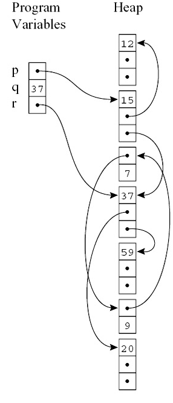

In this lab, your will design and implement a garbage collector called Gimple (Garbage collector is simple) and link it into your Tiger compiler, so that your compiler can manage the Java heap in an automatic manner.
This lab consists of two parts. In the first part, you will design and implement GC maps, including class maps for classes and integer arrays, and stack maps for stack frames and physical registers. In the second part, you will design and implement the Gimple garbage collector based on Cheney's copying algorithm. This algorithm is easier to implement though less space-efficient.
First, check out the source for lab 6:
$ git commit -am 'my solution to lab5'
$ git checkout -b lab6 origin/lab6
these commands will commit your changes to lab5 branch to your local Git repository and then create and check out the remote lab6 branch into your local lab6 branch.
Again, you will now need to merge your code from lab5 into the new lab6 branch:
$ git merge lab5
Do not forget to resolve any conflicts before commit to the local lab6 branch:
$ git commit -am 'lab6 init'
Now, you can import the new lab6 code into your favorite IDE. There are a bunch of new files that you should browse through:
runtime/gc.*: Gimple garbage collector
When you finished your lab, zip you code and submit to the online teaching system.
In this lab, you will first design and implement GC maps, which are data structures generated by compilers to aid in garbage collectors.
The right figure presents  a sample Java memory layout, during the execution of a Java application. Conceptually, the task of a garbage collector can be divided into two sub-phases: scanning and collecting. During the scanning phase, the collector scans through objects in the heap to mark which objects are reachable whereas which are not. Next, during the collecting phase, the collector will collect unreachable objects to reclaim heap spaces. Of course, the division of the garbage collection into scanning and collecting phases is more of explanation purpose. Real-world garbage collectors might combine the two phases or even make use of other strategies.
Before designing and implementing the garbage collector,
two problems must be answered: first, how does
the garbage collector know where to trace the pointers when
scanning an object?
Second, how does the garbage collector determine where to
start to trace the Java heap?
Taking the memory layout in the right figure as an example.
Answers to the first problem will tell the collector
to trace both the
second and third fields when scanning the object with
data 15 (in the first field).
And answers to the second problem will tell the collector
to trace the Java heap starting from program variables
p and r, instead of
q.
To answer the aforementioned problems, the garbage collector need the detailed information about memory layouts called GC maps. Specifically, to tackle the first problem, the garbage collector will need class maps recording which fields are pointers in a given class. To tackle the second problem, the garbage collector will need stack maps recording which physical registers or stack slots in a given stack frame are pointers. The compiler is responsible for generating these GC maps.
For each class, you need to generate a class GC map
data structure
specifying the number of fields in this class as well as
pointers among them. You can use the string-based
representation for the class GC maps with a character Y
for pointer field and N otherwise.
Furthermore, to save memory occupation, you might
store the class GC map in the virtual method table instead of
in each object.
To put the above discussion into perspective, consider the
following example. The Java class A has
two pointer fields (x and z)
besides one integer field (y):
class A{
B x;
int y;
A z;
... // methods
};
The class GC map class_gc_map for A
can be placed at the first slot in the virtual method table
for A:
struct A_virtual_table{
char *class_gc_map = "YNY"; // class GC map
... // virtual method pointers as before
};
where the string "YNY" specifies length
of the object as well as type for each field.
To this point, your Tiger compiler should compile all test cases successfully and the generated binaries should run correctly (even though your Gimple garbage collector is still missing). Again, do not forget to test your implementations and fix any bugs before continuing.
To generate stack GC maps, you will generate, for each
call site (a.k.a, safe points), a data structure recording
which stack slots and
live physical registers holding pointers.
Hence, there will be a list of N data structures
for N static call sites.
For example, consider the following sample assembly code your
Tiger compiler might generate:
f:
...
call g // a call site (to the function g) and
L_1: // ... its return address
...
call h
L_2:
...
n:
...
call k
L_3:
...
the function f contains 2 call sites with
its corresponding return address
(e.g., the function call to g with the
return address L_1), whereas the
function n has just 1 call site with
its return address.
Your Tiger compiler will generate one data fragment for each
call site, respectively:
fragment_L_1:
L_1; // the return address
slots; // stack slot offsets containing pointers
liveRegs; // registers containing live pointers
fragment_L_2:
L_2; // the return address
slots; // stack slot offsets containing pointers
liveRegs; // registers containing live pointers
fragment_L_3:
L_3; // the return address
slots; // stack slot offsets containing pointers
liveRegs; // registers containing live pointers
the field L_i (i=1, 2, or 3) records the return address
and will be used by the
garbage collector to figure out the dedicated function
for a specific return address during stack walking
(to be discussed next), the field slots records
stack slot offsets containing pointers; and the field
liveRegs records registers containing pointers
and also is live across this call.
slots and liveRegs are of variable
lengths.
One possible strategy is to use the string-based
representation as we did for the class GC maps, but
you are free to propose your own ideas and implement them
into your Tiger compiler.
Callee-saved registers pose a technical challenge to garbage collectors as they might contain heap pointers and might be pushed onto the callee's stack frame. To address this challenge, your might perform a whole call stack analysis, from the caller to the callee, to analyze which callee-saved registers contain pointers and in which function they are pushed on the stack frame.
To this point, your Tiger compiler should compile all test cases successfully and the generated binaries should run correctly (even though your Gimple garbage collector is still missing). Again, do not forget to test your implementations and fix any bugs before continuing.
In this part of the lab, you will design and implement the Gimple garbage collector. You will first design and implement a Java heap, then design an object model for MiniJava. Next, you will build GC roots by a call stack walking by leveraging the stack GC maps (as we have discussion in last section). Finally, you will implement a copying collection based on Cheney's algorithm.
In this part of the lab, you will first design a data structure to implement a tailored Java heap, which is transparent, flexible, and secure. As you will use copying collection in your Gimple GC, so the heap consists of two semi-heap of equal sizes.
Upon a collection, the GC should first identify GC roots by leveraging the stack GC map as you have created above. The identification is performed by walking the call stack to inspect each stack frame. To be specific, suppose the stack layout just before the GC execution is as follows:
-----------------------------------
\|/ |
------------------------------------------------------------------------> stack grows
... | ret | saved-rbp | locals | ... | ret | saved-rbp | locals | ...
-------------------------------------------------------------------------
^
rbp
You should process each stack frame as follows.
First you process the most recent stack frame (i.e., the
rightmost one) by fetching
the return address ret, and use it as the key to index
into the stack GC maps to figure out the corresponding
map for the return address ret.
You obtain, from the target map, the detailed stack layout
for the target frame, telling where pointers reside.
Similarly, you walk the call stack to the next
stack frame to repeat the above process, until exhausting
the whole call stack.
As the result of this stack walking, you create a list of all
GC roots to be scanned.
To this point, your Tiger compilers should compile all test cases successfully. Fix any bugs before continuing.
An object model encodes the strategy that how an object can be laid out in the memory (the heap). A good object model should support all kinds of possible operations efficiently and conveniently on an object: virtual method dispatching, locking, garbage collection, and so on. Meanwhile, the object model should encode an object as compact as possible to save memory spaces.
In previous labs, you have used a simple yet effective object model for normal objects and (integer) array objects in MiniJava. In this lab, you will extend the object model to support garbage collection. To be specific, you might use the following object model with 4 extra fields as the object header:
struct object{
void *vptr; // virtual method table pointer
long isObjOrArray; // is this a normal object or an (integer) array object?
long length; // array length
void *forwarding; // forwarding pointer, will be used by your Gimple GC
...; // normal fields for class or array
};
the first field vptr is a virtual method table
pointer pointing to the class virtual method table, to
support virtual method dispatching;
the second field isObjOrArray
indicates whether the target object is a normal object or an
array; the third field length records
the length of the array (if the target object is indeed
an array); finally, the fourth field forwarding
is a special pointer which will be used by your Gimple GC.
You are free to modify or extend this representation, or
propose your own representation.
Tiger_new() and
Tiger_newIntArray() in garbage collector,
to make use of this new object model.
You might also need to change your code generator
of your Tiger compiler to reflect the
changes of the object model.
In this part, you are going to implement the garbage collector, based on Cheney's algorithm using a breadth-first strategy. You should read Tiger book chapter 13.3 first, if you have not read the algorithm.
Tiger_gc() in the file runtime/gc.c.
To this point, you should have a working Tiger compiler with a full-fledged garbage collector. Do not forget to test your compiler as well as collector.
GC round 1: time 0.3s, collected 512 bytes, heap size 10223 bytes
GC round 2: time 0.2s, collected 128 bytes, heap size 14567 bytes
GC round 3: time 0.8s, collected 4096 bytes, heap size 18979 bytes
...
presenting the GC round number, time taken, the collected bytes,
and remaining heap size for each round of GC, respectively.
Implement this feature into your Gimple collector.
You can further improve your Gimple GC in various ways. The following are some ideas worthy trying, but, nevertheless, you are encouraged to propose your own ideas and implement them.
This completes the lab. Remember to hand in your solution to the online teaching system.